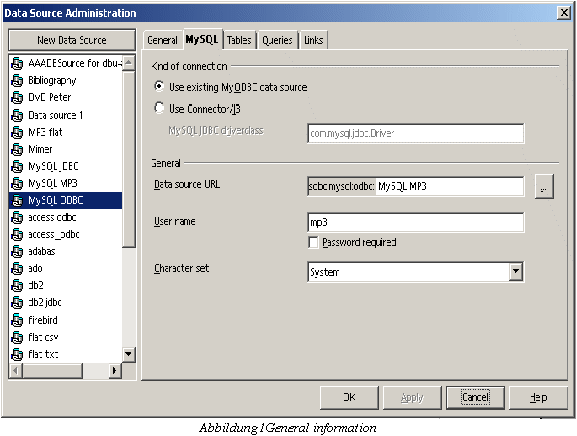

MySQL driver page
applies
to StarOffice 6.1
status: finished, last modified:
Version History
|
11/10/02 |
|
Ocke Janssen |
first draft |
|
11/21/02 |
|
Elizabeth Matthis |
GUI string review |
Abstract
To create a new data source with the new MySQL driver, the data source administration dialog must be extended. A new page will be inserted where the user can fill in all necessary information which are needed to connect to a MySQL database.
Contents
- 1 MySQL driver page 1
- 1.1 The driver page in detail 1
- 1.2 String List 1
- 1.1 The driver page in detail 1
1 MySQL driver page
The new driver page fort MySQL allows the user to select between two different kinds of 'how to connect to the MySQL database'. The first possibility is to use an existing MyODBC1 data source which must be defined in the used system. The second kind is to use the JDBC2 version from MySQL named “connector/J”.
1.1 The driver page in detail

In
the first group box the user can select which kind of connection he
would like to use. Either an existing ODBC data source which must be
defined in the used system or to connect to the database via the JDBC
interface. To allow the user to specify different driver classes, an
extra edit field is enabled when the JDBC was selected, where the
name of the driver class can be inserted3.
In the second group box information about the data source, the user
name, if a password is required and which character set the MySQL
server should use, can be defined. The URL field contains different
meaning depending on the type of connection. In the case of ODBC, it
contains the name of the ODBC data source; in the case of JDBC it
contains the host name, a port number and the database name. To give
the user a hint, the URL field will contain a default value for a
JDBC kind of connection, where the user has to substitute only the
fields in the brackets.
1.2 String List
|
String |
German translation |
comment |
|---|---|---|
|
Type of connection |
Art der Verbindung |
Fixed line; Separates the kind of connection from the general information. No mnemonic necessary. |
|
Use existing My~ODBC data source |
Existierende My~ODBC Datenquelle verwenden |
Radio button label; Will be marked by the user when he wants to use an existing ODBC system data source. “MyODBC” is product name and not to translate. |
|
Use Connector/~J3 |
Connector/~J3 verwenden |
Radio button label; Connector/J3 is the JDBC driver from MySQL. Do not translate or change “Connector/J3”-- it is a product name. |
|
MySQL JDBC d~river class |
MySQL JDBC ~Treiberklasse |
The label for the edit (text box), where the user can insert the JDBC driver class for MySQL |
|
General |
Allgemein |
Fixed line; A separator. No mnemonic necessary. |
|
~Data source URL |
D~atenquellen-URL |
Text box label; The url for the connection. |
|
~User name |
~Benutzername |
Text box label; The user name needed to connect to the database. |
|
Password r~equired |
Kennwort ~erforderlich |
Check box label; Indicates that a password is needed to connect to the database. |
|
~Character set |
~Zeichensatz |
Text box label; The character set. |
|
<host>:<3306>/<DBNAME> |
<Rechnername>:<3306>/<DBNAME> |
String; will be inserted into the URL field when choosing the Connector/J3 to give the user a clue about what is needed. |
|
|
General Page |
|
|
To adjust the settings, go to the MySQL tab page. |
Wechseln Sie zur MySQL-Registerseite um die Einstellungen vorzunehmen. |
This text will be shown on the general page when the type MySQL is selected. |
1Open database connectivity
2Java database connectivity
3The driver class will be searched for in the jar files which can be added under tools->options->Security.